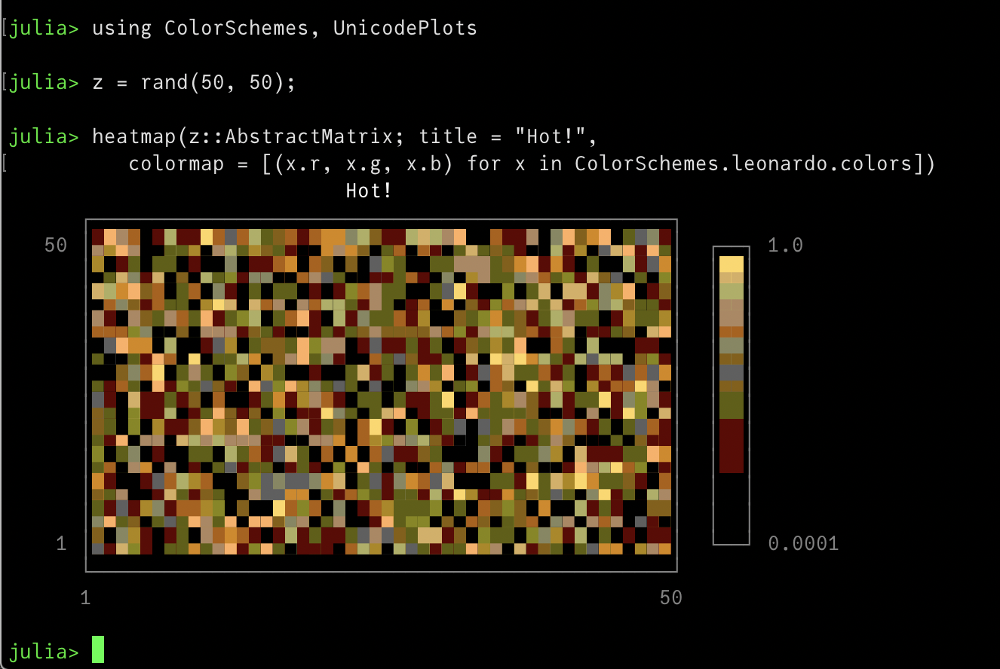
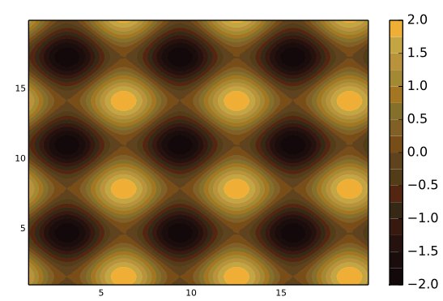
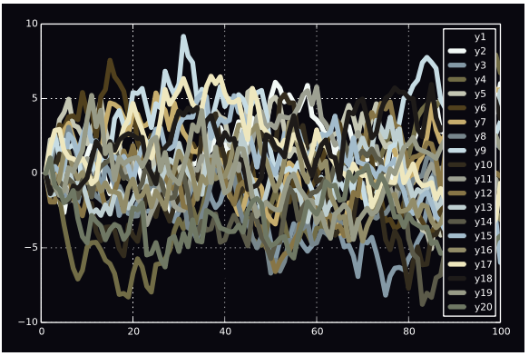
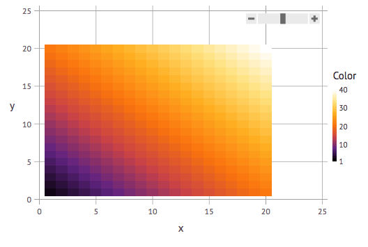
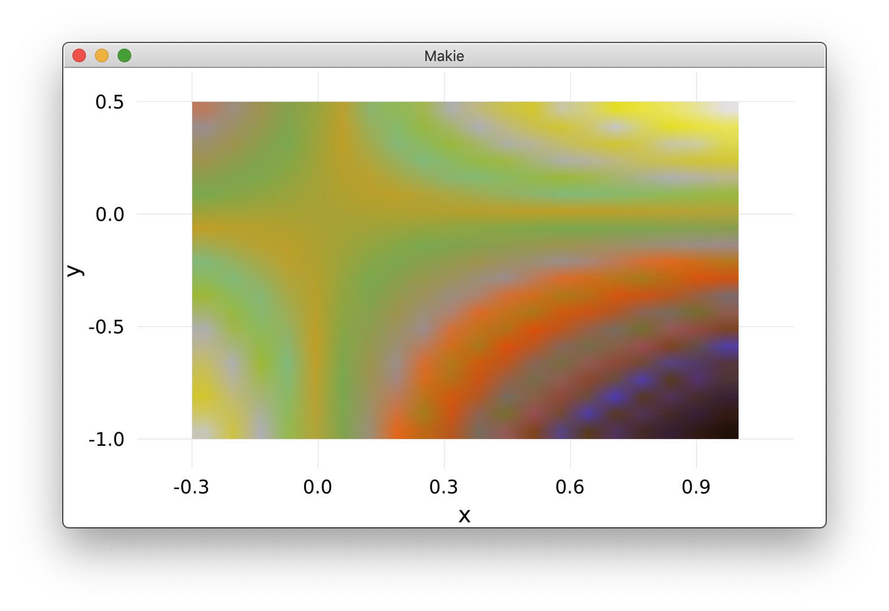
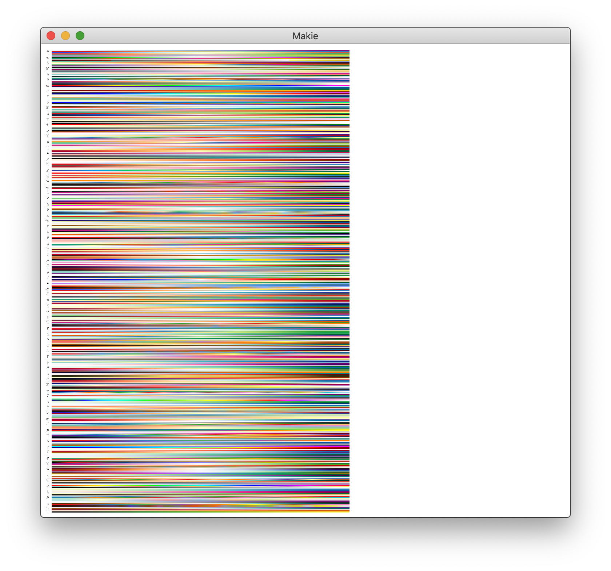
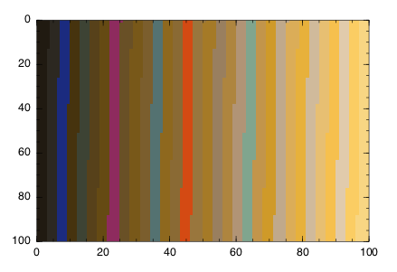
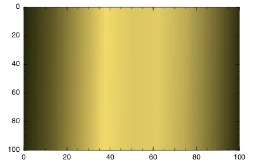
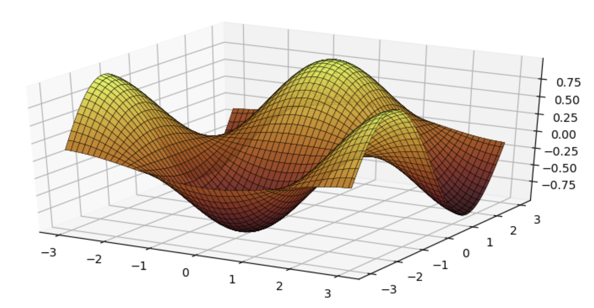

Plotting
UnicodePlots.jl
The heatmap() function in UnicodePlots.jl can use colorschemes. You have to supply the colors as an array of floating-point numbers first:
... colormap = [(x.r, x.g, x.b) for x in ColorSchemes.leonardo.colors]For example:
heatmap(z::AbstractMatrix; title = "Hot!", colormap = [(x.r, x.g, x.b) for x in ColorSchemes.leonardo.colors])
Plots.jl
Plots.jl supports all colorschemes from ColorSchemes.jl. They can be used as a gradient or as a palette and are passed as a symbol holding their name to cgrad or palette.
This renaissance-looking plot uses the leonardo scheme:
using Plotsx = 1:0.3:20y = xf(x, y) = begin sin(x) + cos(y) endcontour(x, y, f, fill=true, c = :leonardo)
(You can use c as a short cut for seriescolor.)
With other plots, use the palette keyword:
using ColorSchemesplot(Plots.fakedata(100, 20), w=4, background_color=ColorSchemes.vermeer[1], palette=:vermeer)
Gadfly
Here's how you can use ColorSchemes in Gadfly:
using Gadfly, ColorSchemesx = repeat(collect(1:20), inner=[20]);y = repeat(collect(1:20), outer=[20]);plot(x=x, y=y, color=x+y, Geom.rectbin, Scale.ContinuousColorScale(p -> get(ColorSchemes.sunset, p)))
Makie
If you use Makie.jl you can pass the colors in a ColorScheme directly to the colormap keyword.
using Makie, ColorSchemesN = 20x = LinRange(-0.3, 1, N)y = LinRange(-1, 0.5, N)z = x .* y'image(x, y, z, colormap = ColorSchemes.picasso.colors)
You can display all the colorschemes using Makie by letting the code browse through the colorschemes dictionary:
using Makie, ColorSchemesh = 0.0offset = 0.1scene = Scene()cam2d!(scene)plot = map(collect(keys(colorschemes))) do cmap global h c = to_colormap(colorschemes[cmap].colors) cbar = image!( scene, range(0, stop = 10, length = length(c)), range(0, stop = 1, length = length(c)), reshape(c, (length(c), 1)), show_axis = false )[end] text!( scene, string(cmap, ":"), position = Point2f0(-0.1, 0.5 + h), align = (:right, :center), show_axis = false, textsize = 0.4 ) translate!(cbar, 0, h, 0) h -= (1 + offset)endscene
Winston
If you prefer Winston.jl for plotting, you can use ColorSchemes with imagesc:
using Winston, ColorSchemesklimt = ColorSchemes.klimt.colorsWinston.colormap(klimt)Winston.imagesc(reshape(1:10000,100,100))
Sometimes you'll want a smoother gradient with more colors. You can use get(scheme, n) to generate a more detailed array of colors, varying n from 0 to 1 by 0.001:
brasstones = ColorSchemes.brassbrasstonesmooth = [get(brasstones, i) for i in 0:0.001:1]Winston.colormap(brasstonesmooth)Winston.imagesc(reshape(1:10000,100,100))
PyPlot
ColorSchemes can be used with the cmap keyword in PyPlot:
using PyPlot, Distributions, ColorSchemessolar = ColorSchemes.solar.colorsn = 100x = range(-3, stop=3, length=n)y = range(-3, stop=3, length=n)xgrid = repeat(x', n, 1);ygrid = repeat(y, 1, n);z = zeros(n, n);for i in 1:n for j in 1:n z[i, j] = 2sin(x[i]) * 2cos(y[j]) endendfig = PyPlot.figure("pyplot_surfaceplot",figsize=(10,10))using3D()ax = fig.add_subplot(2, 1, 1, projection = "3d")ax.plot_surface(xgrid, ygrid, z, rstride=2,edgecolors="k", cstride=2, cmap=ColorMap(solar), alpha=0.8, linewidth=0.25)display(fig)